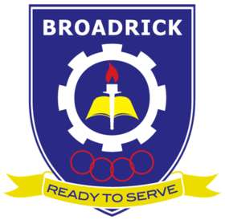

Shaun's Resume
 Name: Shaun Ang Zhang Ze
Age: 18
Address: 292B Compassvale Street #11-214 542292
Email: Shaun_Ang_Zhang_Ze@connect.ite.edu.sg
Number:+65 8292 2071
Referee:Mr Danny Chuon
Name: Shaun Ang Zhang Ze
Age: 18
Address: 292B Compassvale Street #11-214 542292
Email: Shaun_Ang_Zhang_Ze@connect.ite.edu.sg
Number:+65 8292 2071
Referee:Mr Danny Chuon
Education:
|  |
Broadrick Secondary School |
2016 - 2019 |
Normal Technical |
 |
ITE College Central |
2020 - Present |
NITEC in Infocomm-Technology |
Achievements and Accomplishments:
>SYF 2017 Gold
>SYF 2019 Gold
>SIBF 2018 Silver
>Scholarships
>Participated in LKY Competition
>ITE Digitalisation 2020
>Alibaba MySQL
>Alibaba Process Structured Data with Python
>Alibaba Using ECS to Construct a Dynamic Website
>NES Routing and Switching
>Merit of Routing and Switching
>Merit of Cisco IT Essentials
Language and Proficency:
| English Language |
Well Spoken and Proficent |
| Chinese Language |
Fluent |
| Hokkien Language |
Proficent |
Skills:
>Proficent in Handling Programming Languages like Java and Netbeans
>Proficent in Setting up Cisco Routers and Switches
>Proficent in Troubleshooting Cisco Routers and Switches
>Proficent in Handling Window Server XP , 7 , 8 and 10
>Exprienced in handling Raspberry Pi Operating System.
Jobs Experiences And Descriptions:

Capella Hotel
>Worked as a Waiter
-Tasked with arranging, serving , cleaning and communicating with various people and teammates
-learned how having teammates can be helpful and made me open up to communicate more with them
-Learned various skills that can be applied to my course
-Learn how to execute task even when under pressure.

Changi Airport
>Worked as a Lauggage Crew
-Worked at Changi Airport Terminal.
-Learned how to deal with rude individuals
-Helped various people with packing their lauggages to their car or carriers.
-Learned the basic gestures of common courtesy on how we should greet them
-Learned resilience through first time experience.